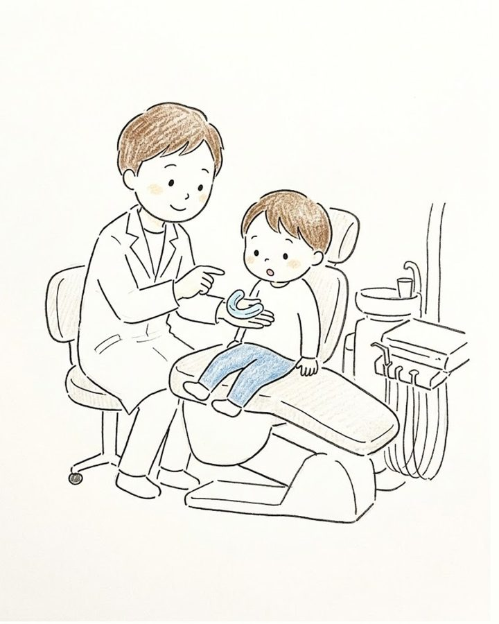

子どもの矯正
あごが成長している時期に歯並びやかみ合わせを整えることで、永久歯が生えるスペースを整え、将来の抜歯や本格的な矯正の負担を軽くできる場合があります。
お子さんのお口の状態や生活に合わせて方法を選びます。まずは無料相談で、気になっていることをお聞かせください。

治療の流れ
- 相談（無料）気になっていることを伺い、矯正の進め方を大まかにご説明します。
- 検査・診断レントゲンや歯型、写真で分析し、治療方法・期間・費用をご説明します。
- プレオルソ（必要な場合）やわらかいマウスピース型の装置を、主に家にいる時間と寝ている間に使います。期間の目安は1〜2年、1〜2か月に1回通院します。
- 1期治療あごの成長を利用して、歯が並ぶスペースを整えます。期間の目安は2〜3年、1〜2か月に1回通院します。
- 観察期間・再診断永久歯が生えそろうまで3〜4か月に1回確認し、2期治療が必要かどうかを再診断します（無料）。
- 2期治療（必要な場合）永久歯の歯並びをワイヤー装置で整えます（目安2〜3年）。終了後は、後戻りを防ぐ保定期間（目安2〜3年）に入ります。
費用（すべて自費診療・税込）
| 項目 | 費用 |
|---|---|
| 相談 | 無料 |
| 検査・診断 | 16,500円 |
| プレオルソ | 88,000円 |
| 1期治療 プレオルソから移行する場合 | 385,000円 341,000円 |
| 2期治療 1期治療から移行する場合 | 770,000円 440,000円 |
| 再検査・再診断 | 無料 |
| 矯正調整料（毎月） 脱離などの急患時・保険診療でのメンテナンス時は0円 | 3,300円 |
記載の期間は目安です。お口の状態や成長、装置の使用状況によって異なります。検査・診断の際に詳しくご説明します。
矯正治療のリスク・副作用
- 装置を使い始めたときや調整の後に、痛みや違和感が出ることがあります
- 歯みがきがしにくくなり、むし歯や歯ぐきの炎症が起こりやすくなります
- プレオルソなど取り外しのできる装置は、決められた時間使わないと効果が出にくくなります
- 1期治療だけで終わらず、2期治療が必要になる場合があります
- 歯の根が短くなる、歯ぐきが下がることがあります
- 治療後に保定装置を使わないと、歯並びが戻ることがあります
- 成長の仕方によっては、予定していた治療期間や方法が変わることがあります